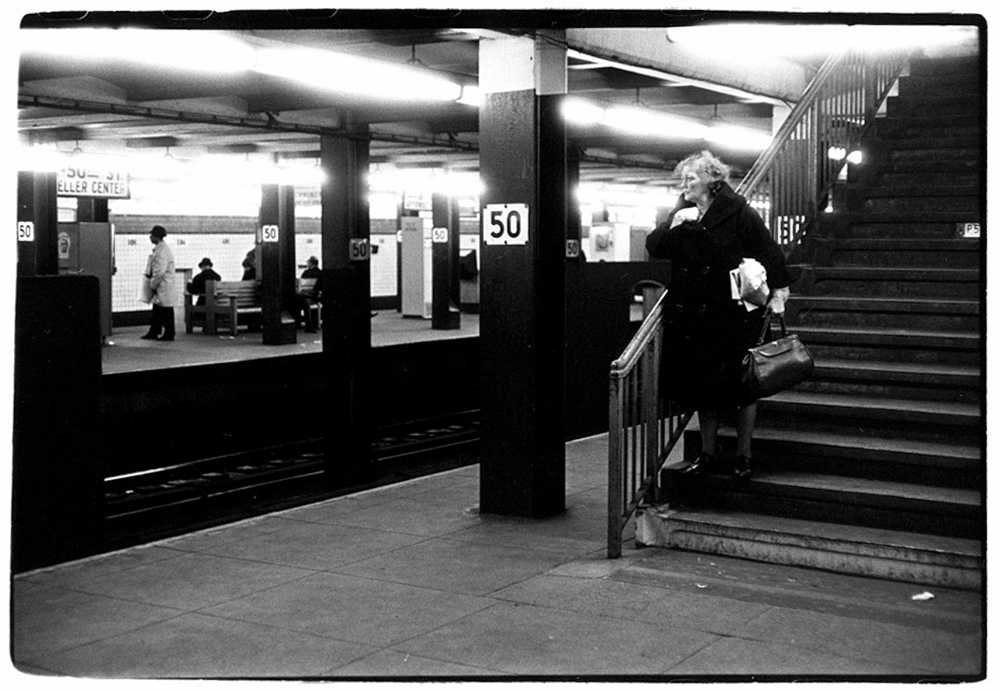
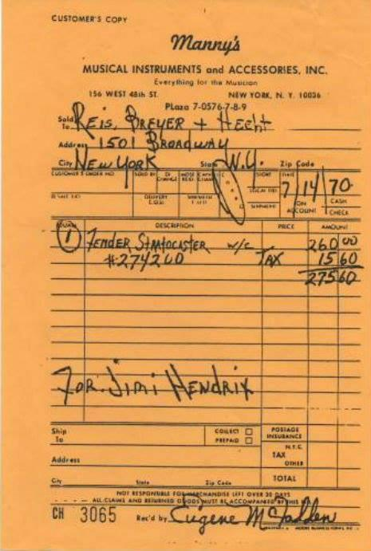
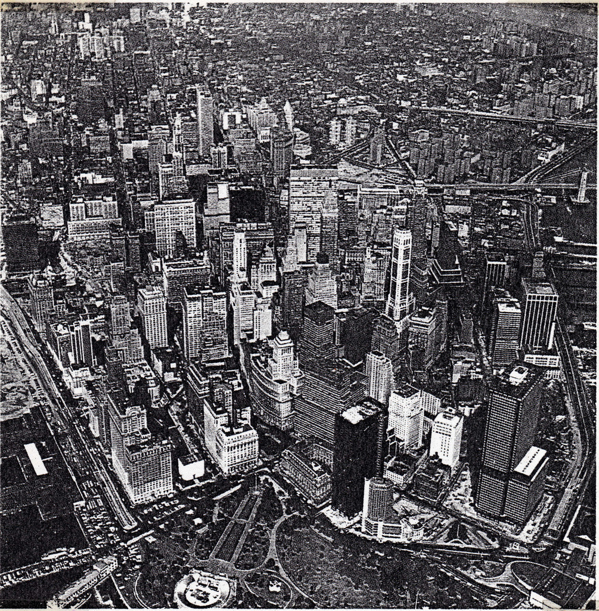
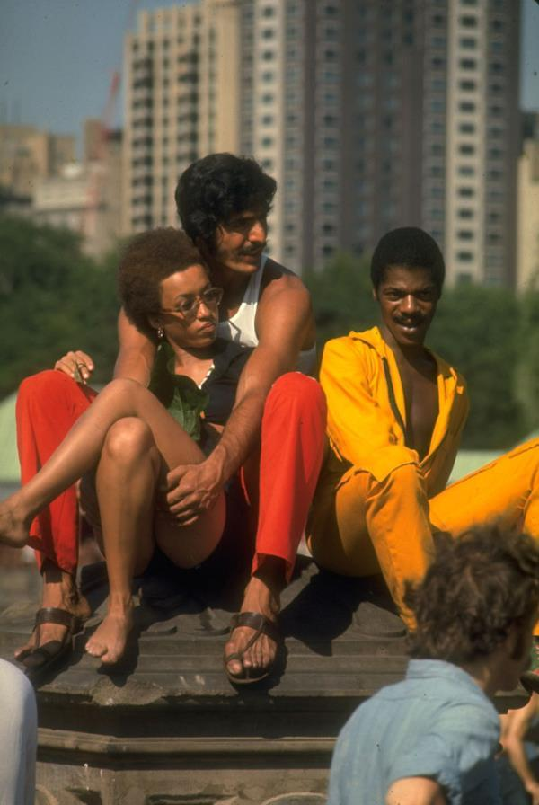
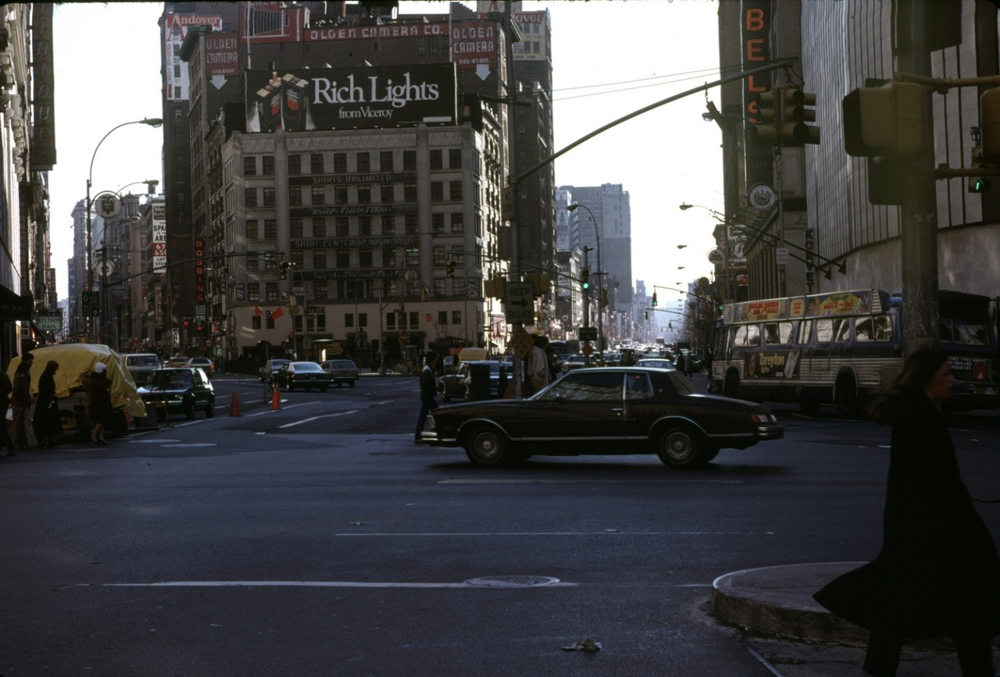
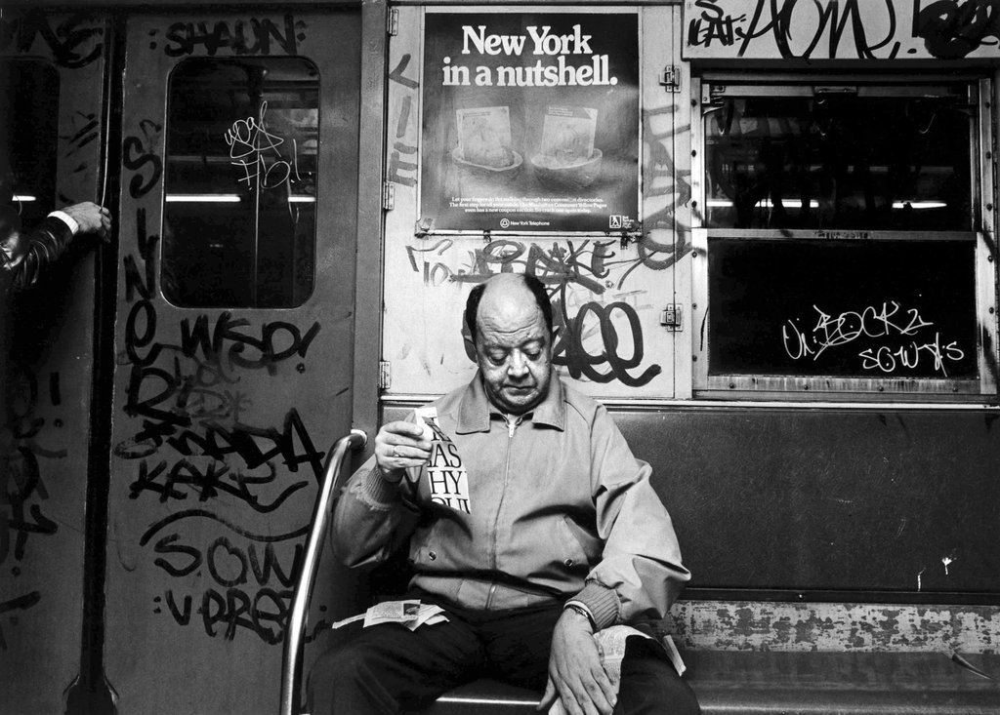

3rd and 13th, 1983
3rd and 13th, 1983

120th Street, 1970

A crowd of men checking enormous breasts in Times Square, 1948.

1967 - Woman standing on subway station stairs, 6th Ave & 50th [Rockefeller Center] from the William Gedney collection, Duke University Libraries digital archive.

Heart-to-heart, protester and cop. 1969.

Receipt for Jimi Hendrix – buying a Strat at the best music store on 48th Street. Manny’s.
Ooh, good question! Three things spring to mind, but I guess I’ll go with a string of bookstores on 18th Street in the early 1980s. I’m cheating by counting these all as one thing, but I used to go to all of them, never just one. There were three awesome used bookstores on 18th between 5th and 6th Ave – they were small but packed full of fascinating stuff – and then there were the two Barnes & Noble stores on 18th and 5th. The main B&N was a marvel, filled with way more books than current day versions have, ridiculously great deals on remaindered books, as well as a massive textbook section that was fun to peruse. On the other side of 5th Ave was an almost equally huge B&N with used books piled to the rafters.
Heaven.
Hahahaha, no, never have. Stepped on lots of little crack vials, though.
Bored on a Saturday. Go ahead, ask me something…


Lower Manhattan from above, 1969

Hot Knishes
(via My Modern Met)

Don’t Move; Improve.
Photo by Tom Kittel

Hanging in the park, 1969

New York City, April 1979
NYC, 1973
Making his own wonderland. 1969 Brooklyn.

Photo by Susan Fensten, 1984

Looting during the 1977 blackout

Fifth Avenue, New York, ca. 1970

All business. East 52nd Street in 1981.

The offices of radio station WINS in the early 1960s, predating its run as a all-news station when it was still a rock ‘n’ roll station. The location is Central Park West at Columbus Circle, photographer unknown.
Yankee Stadium. September 19, 1959.
(Lost Ballparks)

New York in a nutshell.